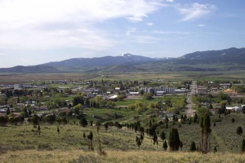

Soda Springs Idaho
Weather Summary
Currently: N/A
High: N/A
Wind Chill: N/A
Humidity: N/A
Wind Speed: N/A
Five Day Forecast
Events
THE WONDERS OF SODA SPRINGS
Towns as tiny as Soda Springs should count themselves lucky if they have
one special attraction or unique characteristic that brings in tourists.
But Soda Springs lays claim to at least three.
The settlement of Soda Springs got its start as an oasis along the Oregon Trail,
eagerly anticipated among emigrants for its thousands of fresh mineral water springs.
A couple of enterprising pioneers recognized the commercial potential of these springs,
and began bottling the water under the name of “Idanha”. This was before the days before water
could be artificially carbonated, and the lightly bubbly Idanha was a hit, winning
the top prize at Chicago’s World Fair in 1893, and again in Paris in 1900.
There are multiple places around town to try out the water, which is still bubbling unabated
out of the ground. We took a cup to the Hooper Springs to sample it.
Not bad, it tastes like lightly carbonated bottled water, a bit sweeter and more mineralized.
Not far away from Hooper Springs (and in fact, too close for comfort) is the Monsanto Phosphorus Plant.
Soda Springs sits on top of one of the largest phosphate deposits in the entire world, and Monsanto’s
large-scale mining and purification plant has changed the town’s landscape. Literally. As part of its
manufacturing process, Monsanto frequently dumps red-hot slag down the side of a massive, man-made hill.
It cools quickly,
but as the molten metal is poured out of the truck, it looks just like lava running down a volcano.
A huge hill of man-made lava, naturally carbonated springs of drinkable mineral water,
and we haven’t even arrived at Soda Springs’s top highlight. In 1937, during an attempt
to find hot water for a pool, a drill accidentally unleashed a geyser in the middle of town.
It roared for months, nearly flooding the little village, before engineers were finally able to get a
handle on the situation. They capped the geyser with a timed valve, making Soda Springs the proud owner of
the “the world’s only captive geyser“.
It erupts every hour, on the hour; more reliable than Old Faithful.